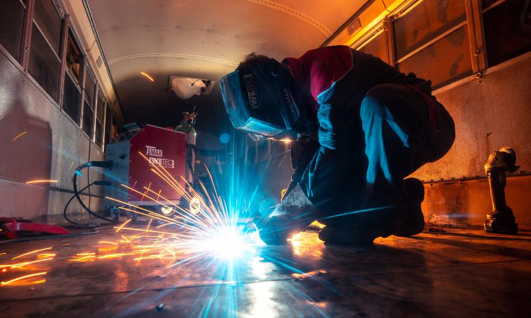
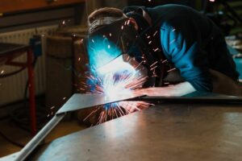
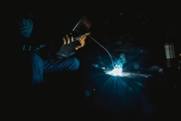
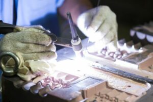

Soldadura eléctrica
- Soldadura por arco eléctrico (SMAW): También conocida como soldadura con electrodo revestido, es uno de los métodos más antiguos y populares. Utiliza electrodos recubiertos que se desgastan durante el proceso para formar el arco eléctrico y crear la soldadura.
- Soldadura de arco sumergido (SAW): Esta técnica emplea un electrodo continuo en polvo o en cinta. El área de soldadura se cubre con un polvo de fundente que ayuda a proteger el metal fundido de la contaminación atmosférica.
- Soldadura con electrodo de tungsteno (TIG): También conocida como GTAW (Gas Tungsten Arc Welding), es ideal para soldar metales delgados y de alta calidad, como acero inoxidable y aluminio. Utiliza un electrodo de tungsteno no consumible y un gas inerte para proteger la soldadura de la contaminación.
- Soldadura con electrodo de metal revestido (FCAW): Es similar a la SMAW, pero utiliza un electrodo con un núcleo de alambre lleno de flujo, lo que lo hace más adecuado para trabajos de soldadura en exteriores o en condiciones adversas.
- Soldadura por resistencia (RSW): Esta técnica emplea la resistencia eléctrica para unir piezas de metal, generalmente utilizada para la fabricación de automóviles y electrodomésticos.
- Preparación: Las piezas de metal a unir deben limpiarse y colocarse en una posición adecuada. Se deben eliminar cualquier óxido, pintura u otros contaminantes que puedan afectar la calidad de la soldadura.
- Ajuste del equipo: Se selecciona el tipo de soldadura eléctrica adecuado para el trabajo y se ajusta la configuración de la fuente de alimentación para obtener la corriente y el voltaje correctos.
- Encendido del arco: Al tocar el electrodo con las piezas de metal, se crea un arco eléctrico. El calor del arco derrite las superficies de las piezas de trabajo y el electrodo, formando una piscina de metal fundido.
- Formación de la soldadura: El soldador guía el electrodo a lo largo de la unión entre las piezas de metal, depositando metal fundido y formando la soldadura.
- Enfriamiento: Una vez que se ha completado la soldadura, se permite que el metal fundido se enfríe y solidifique, creando una conexión sólida entre las piezas.
- Escuelas y centros de formación: Busca instituciones que ofrezcan cursos específicos de soldadura eléctrica. Allí, recibirás instrucción teórica y práctica de profesionales experimentados.
- Tutoriales en línea y videos: Hay numerosos tutoriales y videos disponibles en plataformas como YouTube que pueden servir como introducción.
- Libros y recursos en línea: Consulta libros y recursos en línea, que pueden ofrecer una base teórica más sólida.
- Clases en centros comunitarios o talleres: Algunas comunidades ofrecen clases de soldadura para principiantes donde puedes aprender y practicar bajo la guía de expertos.
La soldadura eléctrica es un proceso de unión de dos piezas de metal mediante la aplicación de calor. El calor se genera a través de una corriente eléctrica que fluye a través de las piezas de trabajo y un electrodo, también conocido como varilla de soldadura. A medida que la corriente eléctrica pasa a través del electrodo, se produce un arco eléctrico que alcanza altas temperaturas, fundiendo las piezas de metal y creando una conexión fuerte y duradera.
¿Qué tipos de soldadura eléctrica existen?
¿Cómo funciona la soldadura eléctrica?
En el proceso de soldadura eléctrica, se requiere un equipo especializado. Los elementos esenciales son una fuente de alimentación eléctrica, un electrodo, y las piezas de metal que se unirán. El procedimiento generalmente implica los siguientes pasos:
¿Dónde aprender sobre soldadura eléctrica?
La soldadura eléctrica es una habilidad valiosa y versátil que ofrece múltiples oportunidades profesionales. Si deseas aprender sobre soldadura eléctrica, existen diversas opciones:
En conclusión, la soldadura eléctrica es una técnica esencial para la fabricación y construcción, permitiendo la creación de estructuras resistentes y duraderas. Con una variedad de métodos y aplicaciones, aprender más sobre el tema te puede abrir puertas a emocionantes oportunidades profesionales y proyectos personales.